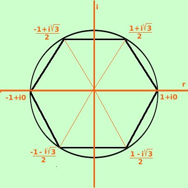

|
Purtroppo questo metodo non e' sempre applicabile, ad esempio non potrai applicarlo alle equazioni x5=1 , x7=1,... Puoi applicarlo solamente quando puoi scomporre in modo che i polinomi componenti siano di grado 1 e 2 (sarebbe possibile anche con i polinomi di terzo grado, ma la formula risolutiva delle equazioni associate a tali polinomi non sono trattate nelle scuole medie superiori) x6 = 1 Equivale a x6 - 1 = 0 scompongo secondo il metodo polinomiale (differenza di quadrati prima e poi differenza e somma di cubi) il termine prima dell'uguale x6-1 = (x3-1)(x3+1)= (x-1)(x2+x+1)(x+1)(x2-x+1) ottengo x6-1 = (x3-1)(x3+1)= (x-1)(x2+x+1)(x+1)(x2-x+1)=0 cioe' devo risolvere le equazioni
Raccogliendo. le soluzioni in campo complesso sono: le indico con i simboli w1, w2, w3,.....  w1 = 1 + i0
w4 = -1 + i0
|